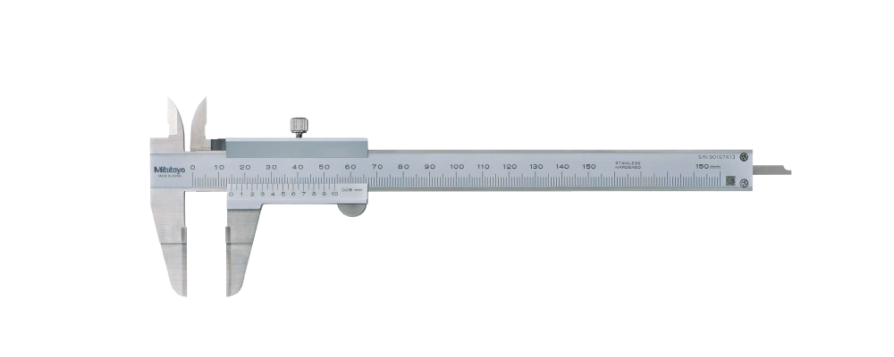

ความละเอียดและการประมาณ
ไม้บรรทัดอ่านได้ \(1\,\mathrm{mm}\) จึงประมาณเพิ่มถึง \(0.1\,\mathrm{mm}\); เวอร์เนียร์และไมโครมิเตอร์ละเอียดกว่ามาก
261111 · ปฏิบัติการฟิสิกส์ · บทที่ 01
ฟิสิกส์เริ่มต้นจากการวัด แต่ตัวเลขที่อ่านได้จะ “เชื่อถือได้แค่ไหน” ขึ้นกับเครื่องมือและวิธีอ่าน วันนี้เราจะฝึกเลือกเครื่องมือ อ่านสเกล และรายงานผลอย่างมีเลขนัยสำคัญ

ปากวัดใน ปากวัดนอก สเกลหลัก สเกลเวอร์เนียร์ ก้านวัดลึกชวนคิดก่อนเริ่ม
สองค่านี้เท่ากันในทางเลข แต่ในการวัด มันสื่อคุณภาพการวัดต่างกัน เพราะเลขนัยสำคัญบอกว่าเราอ่านสเกลได้ละเอียดถึงระดับใด และประมาณด้วยสายตาเพิ่มอีกหนึ่งหลัก
แล็บนี้ฝึกให้เลือกเครื่องมือที่เหมาะกับงาน อ่านค่าอย่างถูกวิธี และรายงานผล พร้อม ความคลาดเคลื่อน อย่างที่งานทดลองจริงต้องทำ
ฝึกเลือกและใช้ไม้บรรทัด เวอร์เนียร์คาลิเปอร์ และไมโครมิเตอร์ให้เหมาะกับงานและความละเอียดที่ต้องการ
รายงานค่าวัดพร้อมความคลาดเคลื่อนอย่างเหมาะสม และคำนวณค่าเฉลี่ย ร้อยละความคลาดเคลื่อน และร้อยละความแตกต่าง
สิ่งที่จะได้ลงมือทำ ฝึกอ่านสเกลทั้งสามเครื่องมือ · วัดเส้นผ่านศูนย์กลาง/เส้นรอบวง/ความหนา · หา \(\pi_{\mathrm{exp}}\), ปริมาตรและความหนาแน่นของทรงกระบอก, พื้นที่หน้าตัดเส้นลวด
ภาพรวมแนวคิด
การวัดต้องใช้หน่วยสากล (ระบบ SI) เครื่องมือแต่ละชนิดมีความละเอียดต่างกัน จึงต้องเลือกให้เหมาะกับงาน อ่านค่าจากสเกลที่แน่นอนแล้ว ประมาณเพิ่มอีกหนึ่งหลัก เสมอ
ไม้บรรทัดอ่านได้ \(1\,\mathrm{mm}\) จึงประมาณเพิ่มถึง \(0.1\,\mathrm{mm}\); เวอร์เนียร์และไมโครมิเตอร์ละเอียดกว่ามาก
ประกอบด้วยเลขที่อ่านแน่นอน + เลขประมาณอีกหนึ่งหลัก การเปลี่ยนหน่วยไม่เปลี่ยนจำนวนเลขนัยสำคัญ
ความแม่นยำ (precision) คือวัดซ้ำได้ค่าใกล้กัน ส่วนความถูกต้อง (accuracy) คือใกล้ค่าจริง — ไม่จำเป็นต้องมาพร้อมกัน
ความคลาดเคลื่อนสองแบบ เชิงระบบ (systematic) จากเครื่องมือ/วิธี/ผู้วัด แก้ได้ด้วยการสอบเทียบ · แบบสุ่ม (random) จากปัจจัยควบคุมไม่ได้ ลดได้ด้วยการวัดซ้ำแล้วเฉลี่ย
วัดความยาว เส้นผ่านศูนย์กลาง เส้นรอบวง และความหนา อ่านได้ละเอียด \(1\,\mathrm{mm}\) แล้วประมาณเพิ่มอีกหนึ่งหลักเป็น \(0.1\,\mathrm{mm}\)
วัดความยาว ความหนา และเส้นผ่านศูนย์กลางภายใน/ภายนอกของวัตถุไม่ใหญ่มาก ความละเอียดคำนวณจาก \(r=s/n\)
วัดความหนา/เส้นผ่านศูนย์กลางของวัตถุขนาดเล็ก มีสเกลหลักและสเกลวงกลม ความละเอียดคำนวณจาก \(r=p/n\) ละเอียดถึง \(0.01\,\mathrm{mm}\)
ใช้วัดเส้นรอบวงของวัตถุทรงกลม โดยพันรอบแล้วนำไปเทียบกับไม้บรรทัด ต้องทำเครื่องหมายตำแหน่งเดิมทุกครั้ง
วัดมวลของทรงกระบอกเพื่อนำไปหาความหนาแน่น \(\rho=M/V\) ควรชั่งบนพื้นราบและรอให้ค่าคงที่ก่อนอ่าน
แหวน กระดาษ ทรงกระบอกกลวง และเส้นลวด สำหรับฝึกวัดด้วยเครื่องมือต่าง ๆ และเปรียบเทียบผล
\[\bar{x}=\frac{x_1+x_2+\cdots+x_n}{n}\]
เฉลี่ยจากการวัดซ้ำเพื่อลดความคลาดเคลื่อนแบบสุ่ม
\[\%\,\mathrm{error}=\frac{|x_{\mathrm{exp}}-x_{\mathrm{true}}|}{x_{\mathrm{true}}}\times100\]
เทียบค่าที่วัดได้กับค่าจริง/ค่ามาตรฐาน
\[\%\,\mathrm{diff}=\frac{|x_1-x_2|}{(x_1+x_2)/2}\times100\]
เทียบผลจากสองวิธี/สองเครื่องมือ
\[r=\frac{s}{n}\]
\(s\) = ระยะ 1 ช่องสเกลหลัก · \(n\) = จำนวนช่องเวอร์เนียร์
\[r=\frac{p}{n}\]
\(p\) = ระยะ 1 พิตช์ · \(n\) = จำนวนช่องสเกลวงกลม
\[\rho=\frac{M}{V}\qquad A=\pi r^{2}\]
ปริมาตรทรงกระบอกกลวงจากเส้นผ่านศูนย์กลางใน/นอกและความสูง
ลำดับการทำงาน
ของใหญ่หยาบใช้ไม้บรรทัด ของเล็กที่ต้องการความละเอียดใช้เวอร์เนียร์หรือไมโครมิเตอร์
ระวัง: อย่าใช้ไม้บรรทัดกับงานที่ต้องการความละเอียดสูง เช่น เส้นลวด เพราะค่าจะหยาบเกินไป
ปิดปากวัด/หมุนจนสุดก่อนเริ่ม ตรวจว่าศูนย์ตรงกัน ถ้าไม่ตรงให้บันทึกค่าแก้
ระวัง: ถ้าศูนย์ไม่ตรงแล้วไม่บันทึกค่าแก้ ค่าที่วัดทุกครั้งจะคลาดเคลื่อนเชิงระบบเท่ากันหมด
อ่านค่าที่แน่นอนจากสเกลหลักในระดับสายตา (ตั้งฉากเพื่อลด parallax)
ระวัง: วางสายตาตั้งฉากกับขีดสเกล การมองเฉียงทำให้อ่านค่าผิด (parallax)
เวอร์เนียร์: หาเส้นที่ตรงกับสเกลหลัก · ไมโครมิเตอร์: อ่านสเกลวงกลม
ระวัง: อย่าบีบไมโครมิเตอร์แรงเกินไป ใช้ ratchet ให้แรงกดสม่ำเสมอ และประมาณเพิ่มเพียงหนึ่งหลักเท่านั้น
วัดอย่างน้อย 3 ครั้ง (และหลายตำแหน่งสำหรับวัตถุไม่สม่ำเสมอ) เพื่อลดความคลาดเคลื่อนแบบสุ่ม
ระวัง: การเฉลี่ยลดได้เฉพาะความคลาดเคลื่อนแบบสุ่ม ไม่ช่วยแก้ zero error หรือความคลาดเคลื่อนเชิงระบบ
ทุกค่าต้องใช้หน่วยเดียวกันก่อนคำนวณ และรายงานเลขนัยสำคัญให้สอดคล้องกับความละเอียดเครื่องมือ
ระวัง: แปลงหน่วยให้ตรงกันก่อนคำนวณ และอย่ารายงานเลขนัยสำคัญเกินความละเอียดของเครื่องมือ
ฝึกอ่านค่าแบบโต้ตอบ
เลื่อนแถบเพื่อกำหนดปรับสเกล หรือกดปุ่มตัวอย่าง แล้วฝึกอ่านจากสเกลจำลองให้ตรงกับค่าที่แสดง
วางสายตาตั้งฉากกับขีดสเกลทุกครั้ง การมองเฉียงทำให้อ่านค่าคลาดเคลื่อน (parallax) — ฝึกในซิมูเลเตอร์ให้คุ้นตาก่อนวัดของจริง
ลองตอบเร็ว
ลองตอบเร็ว
ลองตอบเร็ว
บันทึกผลและแปลงเป็นหลักฐาน
กรอกค่าจากการวัดจริง ค่าเฉลี่ยและผลคำนวณ (\(\pi_{\mathrm{exp}}\), ปริมาตร, ความหนาแน่น, พื้นที่หน้าตัดเส้นลวด) จะอัปเดตให้อัตโนมัติ ข้อมูลถูกบันทึกในเบราว์เซอร์เอง
| ปริมาณ | ครั้งที่ 1 | ครั้งที่ 2 | ครั้งที่ 3 | ค่าเฉลี่ย |
|---|---|---|---|---|
| เส้นผ่านศูนย์กลาง (\(\mathrm{mm}\)) | — | |||
| เส้นรอบวง (\(\mathrm{mm}\)) | — | |||
| ความหนา (\(\mathrm{mm}\)) | — |
\(\pi_{\mathrm{exp}}=C_{\mathrm{avg}}/D_{\mathrm{avg}}\): · ร้อยละความคลาดเคลื่อน:
ความละเอียด \(r=s/n\):
| ปริมาณ | ครั้งที่ 1 | ครั้งที่ 2 | ครั้งที่ 3 | ค่าเฉลี่ย |
|---|---|---|---|---|
| เส้นผ่านศูนย์กลางภายใน (\(\mathrm{mm}\)) | — | |||
| เส้นผ่านศูนย์กลางภายนอก (\(\mathrm{mm}\)) | — | |||
| ความสูงของทรงกระบอก (\(\mathrm{mm}\)) | — | |||
| เส้นรอบวงภายนอก (\(\mathrm{mm}\)) | — |
\(\pi_{\mathrm{exp}}\): · ปริมาตร: · ความหนาแน่น:
ความละเอียด \(r=p/n\):
| วัตถุ | ครั้งที่ 1 | ครั้งที่ 2 | ครั้งที่ 3 | ค่าเฉลี่ย |
|---|---|---|---|---|
| ความหนาปกคู่มือ 1 แผ่น (\(\mathrm{mm}\)) | — | |||
| ความหนากระดาษ 1 แผ่น (\(\mathrm{mm}\)) | — | |||
| ความหนาเส้นลวด 1 เส้น (\(\mathrm{mm}\)) | — | |||
| ความหนาแหวน (\(\mathrm{mm}\)) | — |
พื้นที่หน้าตัดเส้นลวด \(A=\pi r^{2}\): · ร้อยละความแตกต่างความหนาแหวน (ไมโครมิเตอร์ vs ไม้บรรทัด):
ตรวจความเข้าใจ
คำถามท้าทาย
ถ้าวัดความหนาแหวนด้วย ไม้บรรทัด ได้ \(2\,\mathrm{mm}\) และด้วย ไมโครมิเตอร์ ได้ \(1.98\,\mathrm{mm}\) ค่าใดน่าเชื่อถือกว่า และควรรายงานเลขนัยสำคัญต่างกันอย่างไร?
ไมโครมิเตอร์น่าเชื่อถือกว่า เพราะความละเอียดสูงถึง \(0.01\,\mathrm{mm}\) จึงรายงานได้ \(1.98\,\mathrm{mm}\) (3 เลขนัยสำคัญ)
บทเรียน: เลือกเครื่องมือให้เหมาะกับความละเอียดที่งานต้องการ และรายงานเลขนัยสำคัญให้สอดคล้องกัน
แปลผลให้เป็นข้อสรุป
แนวทางวิเคราะห์และสรุปผล
บทสรุปที่ดีไม่ใช่การเล่าว่า “ได้ฝึกใช้เครื่องมือ” แต่คือการ ตอบจุดประสงค์ด้วยตัวเลขและหลักฐาน จากข้อมูลของคุณเอง
ระบุ \(\pi_{\mathrm{exp}}\), ความหนาแน่นทรงกระบอก และพื้นที่หน้าตัดเส้นลวด พร้อมหน่วยและเลขนัยสำคัญที่เหมาะสม
รายงานร้อยละความคลาดเคลื่อนของ \(\pi_{\mathrm{exp}}\) เทียบ \(\pi\) และร้อยละความแตกต่างของผลจากสองเครื่องมือ
บอกว่าค่าใดน่าเชื่อถือที่สุด โดยอ้างความละเอียดเครื่องมือและการกระจายของค่าที่วัดซ้ำ
ระบุสาเหตุหลักหนึ่งอย่าง (เช่น parallax, zero error, แรงกด) และเสนอวิธีลดในการทดลองครั้งถัดไป
เลื่อนขึ้นเพื่อทบทวนส่วนใดก็ได้ หรือกดหัวข้อในแถบด้านบนเพื่อข้ามไปยังส่วนนั้น
ชวนอภิปรายในชั้นเรียน
ความแม่นยำ (precision) กับความถูกต้อง (accuracy) ต่างกันอย่างไร ยกตัวอย่างจากข้อมูลที่วัดซ้ำ
zero error ของเวอร์เนียร์/ไมโครมิเตอร์เกิดจากอะไร และแก้ค่าอย่างไร
เหตุใดไมโครมิเตอร์จึงใช้ ratchet และแรงกดมีผลต่อค่าที่วัดได้ของวัตถุเล็ก/อ่อนอย่างไร
เมื่อคำนวณจากค่าที่วัดด้วยเครื่องมือคนละความละเอียด ควรเลือกจำนวนเลขนัยสำคัญของผลลัพธ์อย่างไร
ทำไมการวัดซ้ำหลายครั้งแล้วเฉลี่ยจึงช่วยลดความคลาดเคลื่อน และลดได้เฉพาะแบบใด
เสริมความรู้
i แนวทางการเขียนความรู้เพิ่มเติม
ในส่วนนี้ให้คุณค้นคว้าและนำเสนอความรู้ที่น่าสนใจ ซึ่งสามารถเป็นได้ทั้ง:
ความรู้ใหม่: เรื่องที่คุณค้นคว้าเพิ่มเติม ซึ่งต่อยอดจากหลักการในบทปฏิบัติการนี้
พื้นฐานหรือเกร็ดความรู้: ความรู้ที่คนทั่วไปอาจไม่ค่อยรู้จัก (แม้จะไม่เกี่ยวกับเนื้อหาใน Lab โดยตรง แต่มีความน่าสนใจและเชื่อมโยงกับฟิสิกส์)